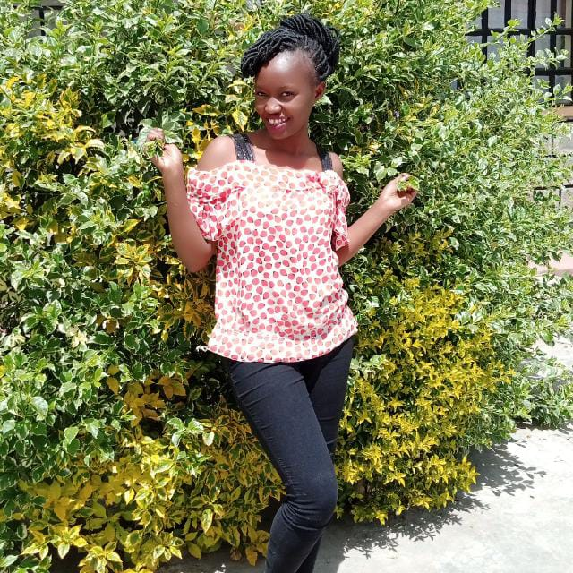

Projects done so far!
Hello there! Welcome to my portfolio.Here is a list of some of
the projects i have been working on.
My top two projects so Far.
-
My Hobby
This projectshows i love doing during my free time. Cycling is one of
the most exciting thing that you can ever learn. Through my cycling
journey i have meant a lot of people who also love doing it. Well i can
say Sport is great. It opens the door to new relationships, teaches you
discipline, keeps you healthy and in general is a very productive way to
spend one’s time. But, sometimes, sport can be tough; physically and
mentally). It can disrupt relationships, cost a lot of money and cause
you to become very “one-dimensional” in your life. I’ve participated in
a few sports over the years. But my main hobby, passion and competitive
Pursuit is cycling. When I started cycling I was a complete fresher.
My family had no history in cycling; I didn’t know
where to start. I was afraid to wear lycra and in general had no real
guiding hand to show me what to do. This blog post is going to be a sort
of self-reflection or journey into the mistakes we make as we’re
beginning, what they teach us and how we can learn from them. Here’s 5
things I wish I’d known when I started cycling (or any sport really).
-
My Pet Website
This website is one of the most exciting projects so far. I wrote it
barely a week old in programming. Through this project i have lots of
staff and and i know they will be of help in my future projects. As time
goes by i keep learning the need to go an extra mile to make sure i
archive all that is needed for that particular day. So far i have used
Html and css to create this website. Hopefully things will get more
exciting.